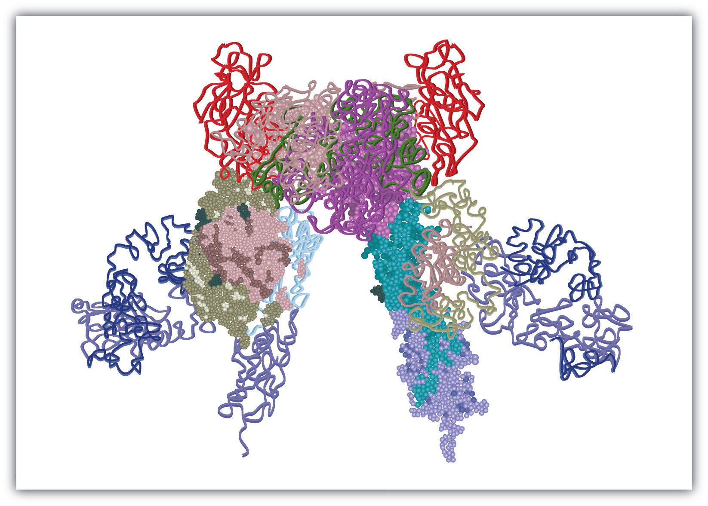
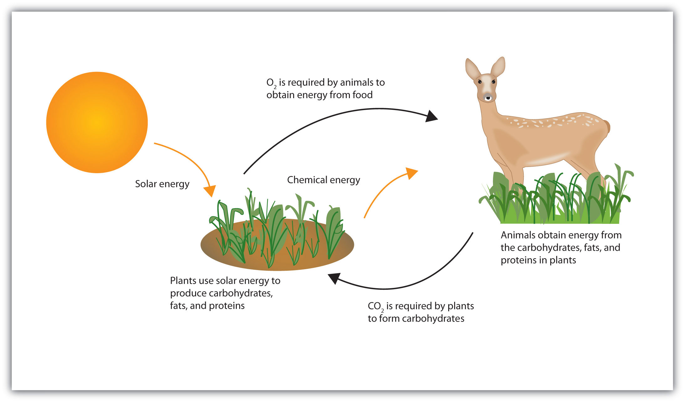
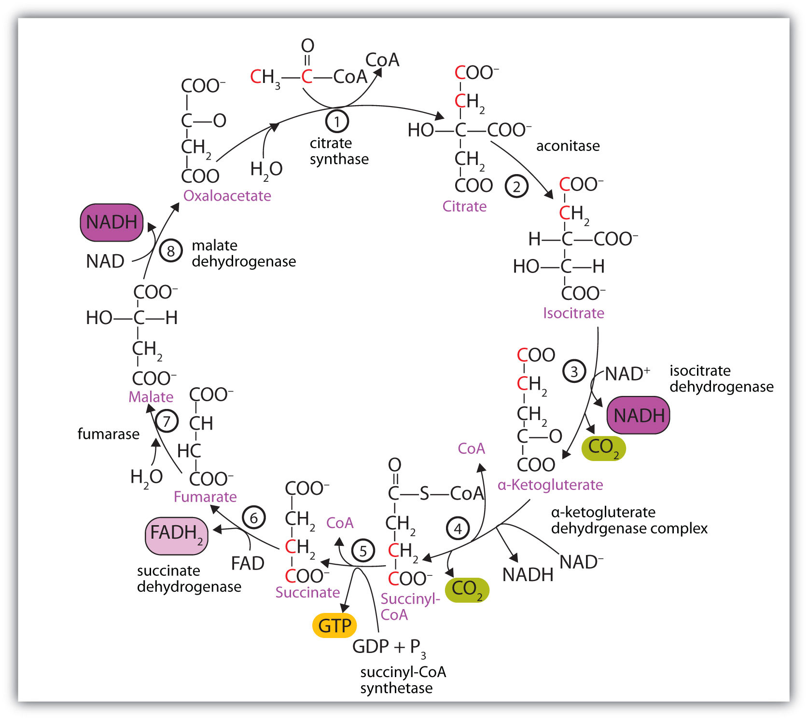
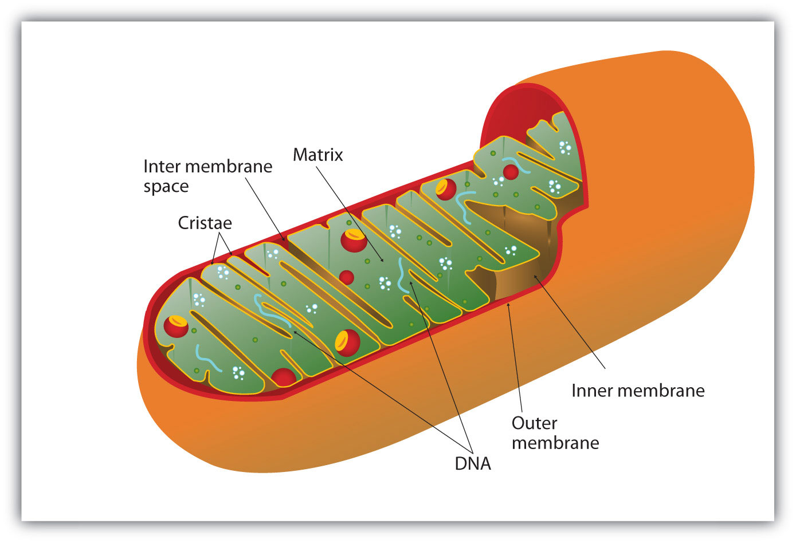
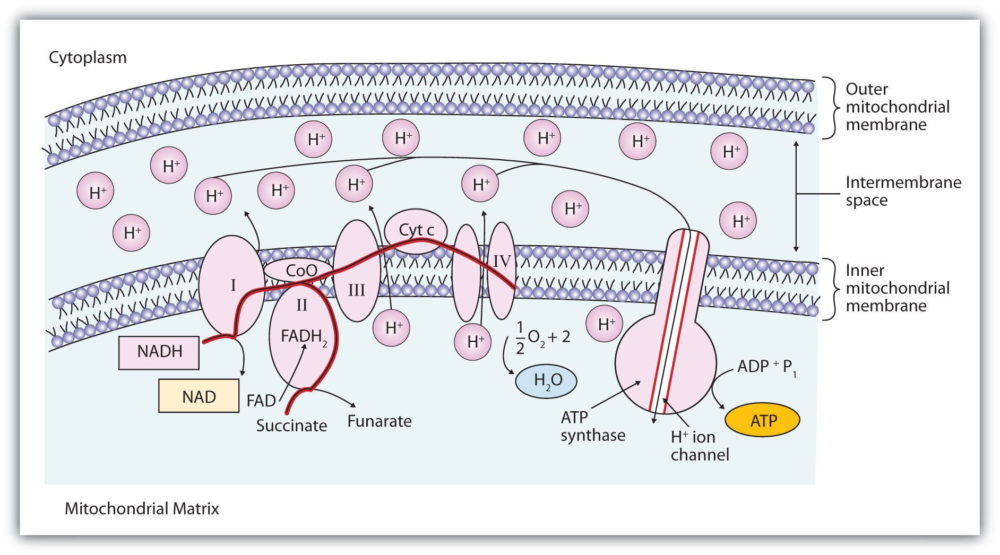
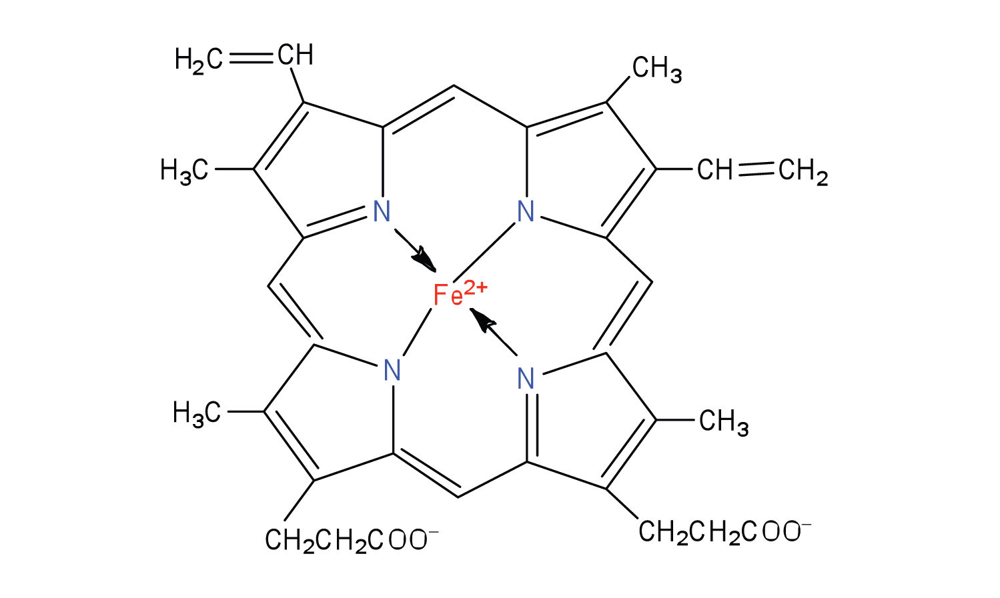
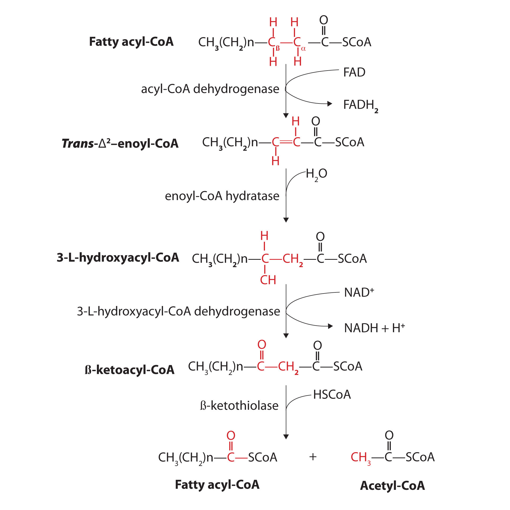

The discovery of the link between insulin and diabetes led to a period of intense research aimed at understanding exactly how insulin works in the body to regulate glucose levels. Hormones in general act by binding to some protein, known as the hormone’s receptor, thus initiating a series of events that lead to a desired outcome. In the early 1970s, the insulin receptor was purified, and researchers began to study what happens after insulin binds to its receptor and how those events are linked to the uptake and metabolism of glucose in cells.
The insulin receptor is located in the cell membrane and consists of four polypeptide chains: two identical chains called α chains and two identical chains called β chains. The α chains, positioned on the outer surface of the membrane, consist of 735 amino acids each and contain the binding site for insulin. The β chains are integral membrane proteins, each composed of 620 amino acids. The binding of insulin to its receptor stimulates the β chains to catalyze the addition of phosphate groups to the specific side chains of tyrosine (referred to as phosphorylation) in the β chains and other cell proteins, leading to the activation of reactions that metabolize glucose. In this chapter we will look at the pathway that breaks down glucose—in response to activation by insulin—for the purpose of providing energy for the cell.
Figure 20.1 Model of the Structure of the Insulin Receptor
Life requires energy. Animals, for example, require heat energy to maintain body temperature, mechanical energy to move their limbs, and chemical energy to synthesize the compounds needed by their cells. Living cells remain organized and functioning properly only through a continual supply of energy. But only specific forms of energy can be used. Supplying a plant with energy by holding it in a flame will not prolong its life. On the other hand, a green plant is able to absorb radiant energy from the sun, the most abundant source of energy for life on the earth. Plants use this energy first to form glucose and then to make other carbohydrates, as well as lipids and proteins. Unlike plants, animals cannot directly use the sun’s energy to synthesize new compounds. They must eat plants or other animals to get carbohydrates, fats, and proteins and the chemical energy stored in them (Figure 20.2 "Some Energy Transformations in Living Systems"). Once digested and transported to the cells, the nutrient molecules can be used in either of two ways: as building blocks for making new cell parts or repairing old ones or “burned” for energy.
Figure 20.2 Some Energy Transformations in Living Systems
Plants and animals exist in a cycle; each requires products of the other.
The thousands of coordinated chemical reactions that keep cells alive are referred to collectively as metabolismThe thousands of coordinated chemical reactions that keep cells alive.. In general, metabolic reactions are divided into two classes: the breaking down of molecules to obtain energy is catabolismMetabolic reactions in which molecules are broken down to obtain energy., and the building of new molecules needed by living systems is anabolismMetabolic reactions in which molecules are synthesized..
Any chemical compound that participates in a metabolic reaction is a metabolite.
Most of the energy required by animals is generated from lipids and carbohydrates. These fuels must be oxidized, or “burned,” for the energy to be released. The oxidation process ultimately converts the lipid or carbohydrate to carbon dioxide (CO2) and water (H2O).
Carbohydrate: C6H12O6 + 6O2 → 6CO2 + 6H2O + 670 kcal Lipid: C16H32O2 + 23O2 → 16CO2 + 16H2O + 2,385 kcalThese two equations summarize the biological combustion of a carbohydrate and a lipid by the cell through respiration. RespirationThe process by which cells oxidize organic molecules in the presence of gaseous oxygen to produce carbon dioxide, water, and energy in the form of ATP. is the collective name for all metabolic processes in which gaseous oxygen is used to oxidize organic matter to carbon dioxide, water, and energy.
Like the combustion of the common fuels we burn in our homes and cars (wood, coal, gasoline), respiration uses oxygen from the air to break down complex organic substances to carbon dioxide and water. But the energy released in the burning of wood is manifested entirely in the form of heat, and excess heat energy is not only useless but also injurious to the living cell. Living organisms instead conserve much of the energy respiration releases by channeling it into a series of stepwise reactions that produce adenosine triphosphate (ATP) or other compounds that ultimately lead to the synthesis of ATP. The remainder of the energy is released as heat and manifested as body temperature. Section 20.1 "ATP—the Universal Energy Currency" examines the structure of ATP and begins to explore its role as the chemical energy carrier of the body.
Adenosine triphosphate (ATP), a nucleotide composed of adenine, ribose, and three phosphate groups, is perhaps the most important of the so-called energy-rich compounds in a cell. Its concentration in the cell varies from 0.5 to 2.5 mg/mL of cell fluid.

Energy-rich compounds are substances having particular structural features that lead to a release of energy after hydrolysis. As a result, these compounds are able to supply energy for biochemical processes that require energy. The structural feature important in ATP is the phosphoric acid anhydride, or pyrophosphate, linkage:

The pyrophosphate bond, symbolized by a squiggle (~), is hydrolyzed when ATP is converted to adenosine diphosphate (ADP). In this hydrolysis reaction, the products contain less energy than the reactants; there is a release of energy (> 7 kcal/mol). One reason for the amount of energy released is that hydrolysis relieves the electron-electron repulsions experienced by the negatively charged phosphate groups when they are bonded to each other (Figure 20.3 "Hydrolysis of ATP to Form ADP").
Figure 20.3 Hydrolysis of ATP to Form ADP

Energy is released because the products (ADP and phosphate ion) have less energy than the reactants [ATP and water (H2O)].
The general equation for ATP hydrolysis is as follows:
ATP + H2O → ADP + Pi + 7.4 kcal/molIf the hydrolysis of ATP releases energy, its synthesis (from ADP) requires energy. In the cell, ATP is produced by those processes that supply energy to the organism (absorption of radiant energy from the sun in green plants and breakdown of food in animals), and it is hydrolyzed by those processes that require energy (the syntheses of carbohydrates, lipids, proteins; the transmission of nerve impulses; muscle contractions). In fact, ATP is the principal medium of energy exchange in biological systems. Many scientists call it the energy currency of cells.
Pi is the symbol for the inorganic phosphate anions H2PO4− and HPO42−.
ATP is not the only high-energy compound needed for metabolism. Several others are listed in Table 20.1 "Energy Released by Hydrolysis of Some Phosphate Compounds". Notice, however, that the energy released when ATP is hydrolyzed is approximately midway between those of the high-energy and the low-energy phosphate compounds. This means that the hydrolysis of ATP can provide energy for the phosphorylation of the compounds below it in the table. For example, the hydrolysis of ATP provides sufficient energy for the phosphorylation of glucose to form glucose 1-phosphate. By the same token, the hydrolysis of compounds, such as creatine phosphate, that appear above ATP in the table can provide the energy needed to resynthesize ATP from ADP.
Table 20.1 Energy Released by Hydrolysis of Some Phosphate Compounds
| Type | Example | Energy Released (kcal/mol) |
|---|---|---|
|
acyl phosphate 
|
1,3-bisphosphoglycerate (BPG) | −11.8 |
| acetyl phosphate | −11.3 | |
|
guanidine phosphates 
|
creatine phosphate | −10.3 |
| arginine phosphate | −9.1 | |
|
pyrophosphates 
|
PPi* → 2Pi | −7.8 |
| ATP → AMP + PPi | −7.7 | |
| ATP → ADP + Pi | −7.5 | |
| ADP → AMP + Pi | −7.5 | |
|
sugar phosphates 
|
glucose 1-phosphate | −5.0 |
| fructose 6-phosphate | −3.8 | |
| AMP → adenosine + Pi | −3.4 | |
| glucose 6-phosphate | −3.3 | |
| glycerol 3-phosphate | −2.2 | |
| *PPi is the pyrophosphate ion. | ||
Why is ATP referred to as the energy currency of the cell?
ATP is the principal molecule involved in energy exchange reactions in biological systems.
How do ATP and ADP differ in structure?
Why does the hydrolysis of ATP to ADP involve the release of energy?
Identify whether each compound would be classified as a high-energy phosphate compound.
Identify whether each compound would be classified as a high-energy phosphate compound.
ATP has a triphosphate group attached, while ADP has only a diphosphate group attached.
We have said that animals obtain chemical energy from the food—carbohydrates, fats, and proteins—they eat through reactions defined collectively as catabolism. We can think of catabolism as occurring in three stages (Figure 20.4 "Energy Conversions"). In stage I, carbohydrates, fats, and proteins are broken down into their individual monomer units: carbohydrates into simple sugars, fats into fatty acids and glycerol, and proteins into amino acids. One part of stage I of catabolism is the breakdown of food molecules by hydrolysis reactions into the individual monomer units—which occurs in the mouth, stomach, and small intestine—and is referred to as digestionThe breakdown of food molecules by hydrolysis reactions into the individual monomer units in the mouth, stomach, and small intestine..
In stage II, these monomer units (or building blocks) are further broken down through different reaction pathways, one of which produces ATP, to form a common end product that can then be used in stage III to produce even more ATP. In this chapter, we will look at each stage of catabolism—as an overview and in detail.
Figure 20.4 Energy Conversions

The conversion of food into cellular energy (as ATP) occurs in three stages.
Carbohydrate digestion begins in the mouth (Figure 20.5 "The Principal Events and Sites of Carbohydrate Digestion"), where salivary α-amylase attacks the α-glycosidic linkages in starch, the main carbohydrate ingested by humans. Cleavage of the glycosidic linkages produces a mixture of dextrins, maltose, and glucose. (For more information about carbohydrates, see Chapter 16 "Carbohydrates".) The α-amylase mixed into the food remains active as the food passes through the esophagus, but it is rapidly inactivated in the acidic environment of the stomach.
Figure 20.5 The Principal Events and Sites of Carbohydrate Digestion

The primary site of carbohydrate digestion is the small intestine. The secretion of α-amylase in the small intestine converts any remaining starch molecules, as well as the dextrins, to maltose. Maltose is then cleaved into two glucose molecules by maltase. Disaccharides such as sucrose and lactose are not digested until they reach the small intestine, where they are acted on by sucrase and lactase, respectively. The major products of the complete hydrolysis of disaccharides and polysaccharides are three monosaccharide units: glucose, fructose, and galactose. These are absorbed through the wall of the small intestine into the bloodstream.
Protein digestion begins in the stomach (Figure 20.6 "The Principal Events and Sites of Protein Digestion"), where the action of gastric juice hydrolyzes about 10% of the peptide bonds. Gastric juiceA mixture of water, inorganic ions, hydrochloric acid, and various enzymes and proteins found in the stomach. is a mixture of water (more than 99%), inorganic ions, hydrochloric acid, and various enzymes and other proteins.
The pain of a gastric ulcer is at least partially due to irritation of the ulcerated tissue by acidic gastric juice.
Figure 20.6 The Principal Events and Sites of Protein Digestion

The hydrochloric acid (HCl) in gastric juice is secreted by glands in the stomach lining. The pH of freshly secreted gastric juice is about 1.0, but the contents of the stomach may raise the pH to between 1.5 and 2.5. HCl helps to denature food proteins; that is, it unfolds the protein molecules to expose their chains to more efficient enzyme action. The principal digestive component of gastric juice is pepsinogen, an inactive enzyme produced in cells located in the stomach wall. When food enters the stomach after a period of fasting, pepsinogen is converted to its active form—pepsin—in a series of steps initiated by the drop in pH. Pepsin catalyzes the hydrolysis of peptide linkages within protein molecules. It has a fairly broad specificity but acts preferentially on linkages involving the aromatic amino acids tryptophan, tyrosine, and phenylalanine, as well as methionine and leucine.
Protein digestion is completed in the small intestine. Pancreatic juice, carried from the pancreas via the pancreatic duct, contains inactive enzymes such as trypsinogen and chymotrypsinogen. They are activated in the small intestine as follows (Figure 20.7 "Activation of Some Pancreatic Enzymes in the Small Intestine"): The intestinal mucosal cells secrete the proteolytic enzyme enteropeptidase, which converts trypsinogen to trypsin; trypsin then activates chymotrypsinogen to chymotrypsin (and also completes the activation of trypsinogen). Both of these active enzymes catalyze the hydrolysis of peptide bonds in protein chains. Chymotrypsin preferentially attacks peptide bonds involving the carboxyl groups of the aromatic amino acids (phenylalanine, tryptophan, and tyrosine). Trypsin attacks peptide bonds involving the carboxyl groups of the basic amino acids (lysine and arginine). Pancreatic juice also contains procarboxypeptidase, which is cleaved by trypsin to carboxypeptidase. The latter is an enzyme that catalyzes the hydrolysis of peptide linkages at the free carboxyl end of the peptide chain, resulting in the stepwise liberation of free amino acids from the carboxyl end of the polypeptide.
Figure 20.7 Activation of Some Pancreatic Enzymes in the Small Intestine

Aminopeptidases in the intestinal juice remove amino acids from the N-terminal end of peptides and proteins possessing a free amino group. Figure 20.8 "Hydrolysis of a Peptide by Several Peptidases" illustrates the specificity of these protein-digesting enzymes. The amino acids that are released by protein digestion are absorbed across the intestinal wall into the circulatory system, where they can be used for protein synthesis.
Figure 20.8 Hydrolysis of a Peptide by Several Peptidases

This diagram illustrates where in a peptide the different peptidases we have discussed would catalyze hydrolysis the peptide bonds.
Lipid digestion begins in the upper portion of the small intestine (Figure 20.9 "The Principal Events and Sites of Lipid (Primarily Triglyceride) Digestion"). A hormone secreted in this region stimulates the gallbladder to discharge bile into the duodenum. The principal constituents of bile are the bile salts, which emulsify large, water-insoluble lipid droplets, disrupting some of the hydrophobic interactions holding the lipid molecules together and suspending the resulting smaller globules (micelles) in the aqueous digestive medium. (For more information on bile salts, see Chapter 17 "Lipids", Section 17.4 "Steroids".) These changes greatly increase the surface area of the lipid particles, allowing for more intimate contact with the lipases and thus rapid digestion of the fats. Another hormone promotes the secretion of pancreatic juice, which contains these enzymes.
Figure 20.9 The Principal Events and Sites of Lipid (Primarily Triglyceride) Digestion

The lipases in pancreatic juice catalyze the digestion of triglycerides first to diglycerides and then to 2‑monoglycerides and fatty acids:

The monoglycerides and fatty acids cross the intestinal lining into the bloodstream, where they are resynthesized into triglycerides and transported as lipoprotein complexes known as chylomicrons. Phospholipids and cholesteryl esters undergo similar hydrolysis in the small intestine, and their component molecules are also absorbed through the intestinal lining.
The further metabolism of monosaccharides, fatty acids, and amino acids released in stage I of catabolism occurs in stages II and III of catabolism.
Distinguish between each pair of compounds.
What are the primary end products of each form of digestion?
In what section of the digestive tract does most of the carbohydrate, lipid, and protein digestion take place?
the small intestine
What are the products of digestion (or stage I of catabolism)?
What is the general type of reaction used in digestion?
Give the site of action and the function of each enzyme.
Give the site of action and the function of each enzyme.
Using chemical equations, describe the chemical changes that triglycerides undergo during digestion.
What are the expected products from the enzymatic action of chymotrypsin on each amino acid segment?
What are the expected products from the enzymatic action of trypsin on each amino acid segment?
proteins: amino acids; carbohydrates: monosaccharides; fats: fatty acids and glycerol
A metabolic pathwayA series of biochemical reactions by which an organism converts a given reactant to a specific end product. is a series of biochemical reactions by which an organism converts a given reactant to a specific end product. As you will learn in Section 20.5 "Stage II of Carbohydrate Catabolism" through Section 20.7 "Stage II of Protein Catabolism", there are specific metabolic pathways—which are different for carbohydrates, triglycerides, and proteins—that break down the products of stage I of catabolism (monosaccharides, fatty acids, and amino acids) to produce a common end product, acetyl-coenzyme A (acetyl-CoA) in stage II of catabolism.
Acetyl-CoA is shown in Figure 20.10 "The Structure of Acetyl-Coenzyme A (Acetyl-CoA)". The acetyl unit, derived (as we will see) from the breakdown of carbohydrates, lipids, and proteins, is attached to coenzyme A, making the acetyl unit more reactive. Acetyl-CoA is used in a myriad of biochemical pathways. For example, it may be used as the starting material for the biosynthesis of lipids (such as triglycerides, phospholipids, or cholesterol and other steroids). Most importantly for energy generation, it may enter the citric acid cycle and be oxidized to produce energy, if energy is needed and oxygen is available. The various fates or uses of acetyl-CoA are summarized in Figure 20.11 "Cell Chemistry".
Figure 20.10 The Structure of Acetyl-Coenzyme A (Acetyl-CoA)

Figure 20.11 Cell Chemistry

Acetyl-CoA plays a variety of roles in cell chemistry.
What is a metabolic pathway?
What vitamin is required to make coenzyme A?
A metabolic pathway is a series of biochemical reactions by which an organism converts a given reactant to a specific end product.
pantothenic acid
The acetyl group enters a cyclic sequence of reactions known collectively as the citric acid cycle (or Krebs cycle or tricarboxylic acid [TCA] cycle)A cyclic sequence of reactions that brings about the oxidation of a two-C unit to carbon dioxide and water.. The cyclical design of this complex series of reactions, which bring about the oxidation of the acetyl group of acetyl-CoA to carbon dioxide and water, was first proposed by Hans Krebs in 1937. (He was awarded the 1953 Nobel Prize in Physiology or Medicine.) Acetyl-CoA’s entrance into the citric acid cycle is the beginning of stage III of catabolism. The citric acid cycle produces adenosine triphosphate (ATP), reduced nicotinamide adenine dinucleotide (NADH), reduced flavin adenine dinucleotide (FADH2), and metabolic intermediates for the synthesis of needed compounds.
At first glance, the citric acid cycle appears rather complex (Figure 20.12 "Reactions of the Citric Acid Cycle"). All the reactions, however, are familiar types in organic chemistry: hydration, oxidation, decarboxylation, and hydrolysis. Each reaction of the citric acid cycle is numbered, and in Figure 20.12 "Reactions of the Citric Acid Cycle", the two acetyl carbon atoms are highlighted in red. Each intermediate in the cycle is a carboxylic acid, existing as an anion at physiological pH. All the reactions occur within the mitochondria, which are small organelles within the cells of plants and animals. We will look more closely at the structure of mitochondria in Section 20.5 "Stage II of Carbohydrate Catabolism".
Figure 20.12 Reactions of the Citric Acid Cycle
In the first reaction, acetyl-CoA enters the citric acid cycle, and the acetyl group is transferred onto oxaloacetate, yielding citrate. Note that this step releases coenzyme A. The reaction is catalyzed by citrate synthase.
In the next step, aconitase catalyzes the isomerization of citrate to isocitrate. In this reaction, a tertiary alcohol, which cannot be oxidized, is converted to a secondary alcohol, which can be oxidized in the next step.
Isocitrate then undergoes a reaction known as oxidative decarboxylation because the alcohol is oxidized and the molecule is shortened by one carbon atom with the release of carbon dioxide (decarboxylation). The reaction is catalyzed by isocitrate dehydrogenase, and the product of the reaction is α-ketoglutarate. An important reaction linked to this is the reduction of the coenzyme nicotinamide adenine dinucleotide (NAD+) to NADH. The NADH is ultimately reoxidized, and the energy released is used in the synthesis of ATP, as we shall see.
The fourth step is another oxidative decarboxylation. This time α-ketoglutarate is converted to succinyl-CoA, and another molecule of NAD+ is reduced to NADH. The α-ketoglutarate dehydrogenase complex catalyzes this reaction. This is the only irreversible reaction in the citric acid cycle. As such, it prevents the cycle from operating in the reverse direction, in which acetyl-CoA would be synthesized from carbon dioxide.
Comment: So far, in the first four steps, two carbon atoms have entered the cycle as an acetyl group, and two carbon atoms have been released as molecules of carbon dioxide. The remaining reactions of the citric acid cycle use the four carbon atoms of the succinyl group to resynthesize a molecule of oxaloacetate, which is the compound needed to combine with an incoming acetyl group and begin another round of the cycle.
In the fifth reaction, the energy released by the hydrolysis of the high-energy thioester bond of succinyl-CoA is used to form guanosine triphosphate (GTP) from guanosine diphosphate (GDP) and inorganic phosphate in a reaction catalyzed by succinyl-CoA synthetase. This step is the only reaction in the citric acid cycle that directly forms a high-energy phosphate compound. GTP can readily transfer its terminal phosphate group to adenosine diphosphate (ADP) to generate ATP in the presence of nucleoside diphosphokinase.

Succinate dehydrogenase then catalyzes the removal of two hydrogen atoms from succinate, forming fumarate. This oxidation-reduction reaction uses flavin adenine dinucleotide (FAD), rather than NAD+, as the oxidizing agent. Succinate dehydrogenase is the only enzyme of the citric acid cycle located within the inner mitochondrial membrane. We will see soon the importance of this.
In the following step, a molecule of water is added to the double bond of fumarate to form L-malate in a reaction catalyzed by fumarase.
One revolution of the cycle is completed with the oxidation of L-malate to oxaloacetate, brought about by malate dehydrogenase. This is the third oxidation-reduction reaction that uses NAD+ as the oxidizing agent. Oxaloacetate can accept an acetyl group from acetyl-CoA, allowing the cycle to begin again.
Respiration can be defined as the process by which cells oxidize organic molecules in the presence of gaseous oxygen to produce carbon dioxide, water, and energy in the form of ATP. We have seen that two carbon atoms enter the citric acid cycle from acetyl-CoA (step 1), and two different carbon atoms exit the cycle as carbon dioxide (steps 3 and 4). Yet nowhere in our discussion of the citric acid cycle have we indicated how oxygen is used. Recall, however, that in the four oxidation-reduction steps occurring in the citric acid cycle, the coenzyme NAD+ or FAD is reduced to NADH or FADH2, respectively. Oxygen is needed to reoxidize these coenzymes. Recall, too, that very little ATP is obtained directly from the citric acid cycle. Instead, oxygen participation and significant ATP production occur subsequent to the citric acid cycle, in two pathways that are closely linked: electron transport and oxidative phosphorylation.
All the enzymes and coenzymes for the citric acid cycle, the reoxidation of NADH and FADH2, and the production of ATP are located in the mitochondriaSmall, oval organelles with double membranes; the “power plants” of a cell., which are small, oval organelles with double membranes, often referred to as the “power plants” of the cell (Figure 20.13 "Respiration"). A cell may contain 100–5,000 mitochondria, depending on its function, and the mitochondria can reproduce themselves if the energy requirements of the cell increase.
Figure 20.13 Respiration
Cellular respiration occurs in the mitochondria.
Figure 20.13 "Respiration" shows the mitochondrion’s two membranes: outer and inner. The inner membrane is extensively folded into a series of internal ridges called cristae. Thus there are two compartments in mitochondria: the intermembrane space, which lies between the membranes, and the matrix, which lies inside the inner membrane. The outer membrane is permeable, whereas the inner membrane is impermeable to most molecules and ions, although water, oxygen, and carbon dioxide can freely penetrate both membranes. The matrix contains all the enzymes of the citric acid cycle with the exception of succinate dehydrogenase, which is embedded in the inner membrane. The enzymes that are needed for the reoxidation of NADH and FADH2 and ATP production are also located in the inner membrane. They are arranged in specific positions so that they function in a manner analogous to a bucket brigade. This highly organized sequence of oxidation-reduction enzymes is known as the electron transport chain (or respiratory chain)An organized sequence of oxidation-reduction reactions that ultimately transports electrons to oxygen, reducing it to water..
Figure 20.14 "The Mitochondrial Electron Transport Chain and ATP Synthase" illustrates the organization of the electron transport chain. The components of the chain are organized into four complexes designated I, II, III, and IV. Each complex contains several enzymes, other proteins, and metal ions. The metal ions can be reduced and then oxidized repeatedly as electrons are passed from one component to the next. Recall from Chapter 5 "Introduction to Chemical Reactions", Section 5.5 "Oxidation-Reduction (Redox) Reactions", that a compound is reduced when it gains electrons or hydrogen atoms and is oxidized when it loses electrons or hydrogen atoms.
Figure 20.14 The Mitochondrial Electron Transport Chain and ATP Synthase
The red line shows the path of electrons.
Electrons can enter the electron transport chain through either complex I or II. We will look first at electrons entering at complex I. These electrons come from NADH, which is formed in three reactions of the citric acid cycle. Let’s use step 8 as an example, the reaction in which L-malate is oxidized to oxaloacetate and NAD+ is reduced to NADH. This reaction can be divided into two half reactions:
Oxidation half-reaction:
Reduction half-reaction:
In the oxidation half-reaction, two hydrogen (H+) ions and two electrons are removed from the substrate. In the reduction half-reaction, the NAD+ molecule accepts both of those electrons and one of the H+ ions. The other H+ ion is transported from the matrix, across the inner mitochondrial membrane, and into the intermembrane space. The NADH diffuses through the matrix and is bound by complex I of the electron transport chain. In the complex, the coenzyme flavin mononucleotide (FMN) accepts both electrons from NADH. By passing the electrons along, NADH is oxidized back to NAD+ and FMN is reduced to FMNH2 (reduced form of flavin mononucleotide). Again, the reaction can be illustrated by dividing it into its respective half-reactions.
Oxidation half-reaction:
Reduction half-reaction:
Complex I contains several proteins that have iron-sulfur (Fe·S) centers. The electrons that reduced FMN to FMNH2 are now transferred to these proteins. The iron ions in the Fe·S centers are in the Fe(III) form at first, but by accepting an electron, each ion is reduced to the Fe(II) form. Because each Fe·S center can transfer only one electron, two centers are needed to accept the two electrons that will regenerate FMN.
Oxidation half-reaction:
FMNH2 → FMN + 2H+ + 2e−Reduction half-reaction:
2Fe(III) · S + 2e− → 2Fe(II) · SElectrons from FADH2, formed in step 6 of the citric acid cycle, enter the electron transport chain through complex II. Succinate dehydrogenase, the enzyme in the citric acid cycle that catalyzes the formation of FADH2 from FAD is part of complex II. The electrons from FADH2 are then transferred to an Fe·S protein.
Oxidation half-reaction:
FADH2 → FAD + 2H+ + 2e−Reduction half-reaction:
2Fe(III) · S + 2e− → 2Fe(II) · SElectrons from complexes I and II are then transferred from the Fe·S protein to coenzyme Q (CoQ), a mobile electron carrier that acts as the electron shuttle between complexes I or II and complex III.
Coenzyme Q is also called ubiquinone because it is ubiquitous in living systems.
Oxidation half-reaction:
2Fe(II) · S → 2Fe(III) · S + 2e−Reduction half-reaction:
Complexes III and IV include several iron-containing proteins known as cytochromesA protein that contains an iron porphyrin in which iron can alternate between Fe(II) and Fe(III).. The iron in these enzymes is located in substructures known as iron porphyrins (Figure 20.15 "An Iron Porphyrin"). Like the Fe·S centers, the characteristic feature of the cytochromes is the ability of their iron atoms to exist as either Fe(II) or Fe(III). Thus, each cytochrome in its oxidized form—Fe(III)—can accept one electron and be reduced to the Fe(II) form. This change in oxidation state is reversible, so the reduced form can donate its electron to the next cytochrome, and so on. Complex III contains cytochromes b and c, as well as Fe·S proteins, with cytochrome c acting as the electron shuttle between complex III and IV. Complex IV contains cytochromes a and a3 in an enzyme known as cytochrome oxidase. This enzyme has the ability to transfer electrons to molecular oxygen, the last electron acceptor in the chain of electron transport reactions. In this final step, water (H2O) is formed.
Oxidation half-reaction:
4Cyt a3–Fe(II) → 4Cyt a3–Fe(III) + 4e−Reduction half-reaction:
O2 + 4H+ + 4e− → 2H2OFigure 20.15 An Iron Porphyrin
Iron porphyrins are present in cytochromes as well as in myoglobin and hemoglobin.
Each intermediate compound in the electron transport chain is reduced by the addition of one or two electrons in one reaction and then subsequently restored to its original form by delivering the electron(s) to the next compound along the chain. The successive electron transfers result in energy production. But how is this energy used for the synthesis of ATP? The process that links ATP synthesis to the operation of the electron transport chain is referred to as oxidative phosphorylationThe process that links ATP synthesis to the operation of the electron transport chain..
Electron transport is tightly coupled to oxidative phosphorylation. The coenzymes NADH and FADH2 are oxidized by the respiratory chain only if ADP is simultaneously phosphorylated to ATP. The currently accepted model explaining how these two processes are linked is known as the chemiosmotic hypothesis, which was proposed by Peter Mitchell, resulting in Mitchell being awarded the 1978 Nobel Prize in Chemistry.
Looking again at Figure 20.14 "The Mitochondrial Electron Transport Chain and ATP Synthase", we see that as electrons are being transferred through the electron transport chain, hydrogen (H+) ions are being transported across the inner mitochondrial membrane from the matrix to the intermembrane space. The concentration of H+ is already higher in the intermembrane space than in the matrix, so energy is required to transport the additional H+ there. This energy comes from the electron transfer reactions in the electron transport chain. But how does the extreme difference in H+ concentration then lead to ATP synthesis? The buildup of H+ ions in the intermembrane space results in an H+ ion gradient that is a large energy source, like water behind a dam (because, given the opportunity, the protons will flow out of the intermembrane space and into the less concentrated matrix). Current research indicates that the flow of H+ down this concentration gradient through a fifth enzyme complex, known as ATP synthase, leads to a change in the structure of the synthase, causing the synthesis and release of ATP.
In cells that are using energy, the turnover of ATP is very high, so these cells contain high levels of ADP. They must therefore consume large quantities of oxygen continuously, so as to have the energy necessary to phosphorylate ADP to form ATP. Consider, for example, that resting skeletal muscles use about 30% of a resting adult’s oxygen consumption, but when the same muscles are working strenuously, they account for almost 90% of the total oxygen consumption of the organism.
Experiment has shown that 2.5–3 ATP molecules are formed for every molecule of NADH oxidized in the electron transport chain, and 1.5–2 ATP molecules are formed for every molecule of FADH2 oxidized. Table 20.2 "Maximum Yield of ATP from the Complete Oxidation of 1 Mol of Acetyl-CoA" summarizes the theoretical maximum yield of ATP produced by the complete oxidation of 1 mol of acetyl-CoA through the sequential action of the citric acid cycle, the electron transport chain, and oxidative phosphorylation.
Table 20.2 Maximum Yield of ATP from the Complete Oxidation of 1 Mol of Acetyl-CoA
| Reaction | Comments | Yield of ATP (moles) |
|---|---|---|
| Isocitrate → α-ketoglutarate + CO2 | produces 1 mol NADH | |
| α-ketoglutarate → succinyl-CoA + CO2 | produces 1 mol NADH | |
| Succinyl-CoA → succinate | produces 1 mol GTP | +1 |
| Succinate → fumarate | produces 1 mol FADH2 | |
| Malate → oxaloacetate | produces 1 mol NADH | |
| 1 FADH2 from the citric acid cycle | yields 2 mol ATP | +2 |
| 3 NADH from the citric acid cycle | yields 3 mol ATP/NADH | +9 |
| Net yield of ATP: | +12 | |
What is the main function of the citric acid cycle?
Two carbon atoms are fed into the citric acid cycle as acetyl-CoA. In what form are two carbon atoms removed from the cycle?
What are mitochondria and what is their function in the cell?
the complete oxidation of carbon atoms to carbon dioxide and the formation of a high-energy phosphate compound, energy rich reduced coenzymes (NADH and FADH2), and metabolic intermediates for the synthesis of other compounds
as carbon dioxide
Mitochondria are small organelles with a double membrane that contain the enzymes and other molecules needed for the production of most of the ATP needed by the body.
Replace each question mark with the correct compound.
Replace each question mark with the correct compound.
From the reactions in Exercises 1 and 2, select the equation(s) by number and letter in which each type of reaction occurs.
From the reactions in Exercises 1 and 2, select the equation(s) by number and letter in which each type of reaction occurs.
What similar role do coenzyme Q and cytochrome c serve in the electron transport chain?
What is the electron acceptor at the end of the electron transport chain? To what product is this compound reduced?
What is the function of the cytochromes in the electron transport chain?
Both molecules serve as electron shuttles between the complexes of the electron transport chain.
Cytochromes are proteins in the electron transport chain and serve as one-electron carriers.
In stage II of catabolism, the metabolic pathway known as glycolysisThe metabolic pathway in which glucose is broken down to two molecules of pyruvate with the corresponding production of ATP. converts glucose into two molecules of pyruvate (a three-carbon compound with three carbon atoms) with the corresponding production of adenosine triphosphate (ATP). The individual reactions in glycolysis were determined during the first part of the 20th century. It was the first metabolic pathway to be elucidated, in part because the participating enzymes are found in soluble form in the cell and are readily isolated and purified. The pathway is structured so that the product of one enzyme-catalyzed reaction becomes the substrate of the next. The transfer of intermediates from one enzyme to the next occurs by diffusion.
The 10 reactions of glycolysis, summarized in Figure 20.16 "Glycolysis", can be divided into two phases. In the first 5 reactions—phase I—glucose is broken down into two molecules of glyceraldehyde 3-phosphate. In the last five reactions—phase II—each glyceraldehyde 3-phosphate is converted into pyruvate, and ATP is generated. Notice that all the intermediates in glycolysis are phosphorylated and contain either six or three carbon atoms.
Figure 20.16 Glycolysis

When glucose enters a cell, it is immediately phosphorylated to form glucose 6-phosphate, in the first reaction of phase I. The phosphate donor in this reaction is ATP, and the enzyme—which requires magnesium ions for its activity—is hexokinase. In this reaction, ATP is being used rather than being synthesized. The presence of such a reaction in a catabolic pathway that is supposed to generate energy may surprise you. However, in addition to activating the glucose molecule, this initial reaction is essentially irreversible, an added benefit that keeps the overall process moving in the right direction. Furthermore, the addition of the negatively charged phosphate group prevents the intermediates formed in glycolysis from diffusing through the cell membrane, as neutral molecules such as glucose can do.
In the next reaction, phosphoglucose isomerase catalyzes the isomerization of glucose 6-phosphate to fructose 6-phosphate. This reaction is important because it creates a primary alcohol, which can be readily phosphorylated.
The subsequent phosphorylation of fructose 6-phosphate to form fructose 1,6-bisphosphate is catalyzed by phosphofructokinase, which requires magnesium ions for activity. ATP is again the phosphate donor.
When a molecule contains two phosphate groups on different carbon atoms, the convention is to use the prefix bis. When the two phosphate groups are bonded to each other on the same carbon atom (for example, adenosine diphosphate [ADP]), the prefix is di.
Fructose 1,6-bisphosphate is enzymatically cleaved by aldolase to form two triose phosphates: dihydroxyacetone phosphate and glyceraldehyde 3-phosphate.
Isomerization of dihydroxyacetone phosphate into a second molecule of glyceraldehyde 3-phosphate is the final step in phase I. The enzyme catalyzing this reaction is triose phosphate isomerase.
Comment: In steps 4 and 5, aldolase and triose phosphate isomerase effectively convert one molecule of fructose 1,6-bisphosphate into two molecules of glyceraldehyde 3-phosphate. Thus, phase I of glycolysis requires energy in the form of two molecules of ATP and releases none of the energy stored in glucose.
In the initial step of phase II, glyceraldehyde 3-phosphate is both oxidized and phosphorylated in a reaction catalyzed by glyceraldehyde-3-phosphate dehydrogenase, an enzyme that requires nicotinamide adenine dinucleotide (NAD+) as the oxidizing agent and inorganic phosphate as the phosphate donor. In the reaction, NAD+ is reduced to reduced nicotinamide adenine dinucleotide (NADH), and 1,3-bisphosphoglycerate (BPG) is formed.
BPG has a high-energy phosphate bond (see Table 20.1 "Energy Released by Hydrolysis of Some Phosphate Compounds") joining a phosphate group to C1. This phosphate group is now transferred directly to a molecule of ADP, thus forming ATP and 3-phosphoglycerate. The enzyme that catalyzes the reaction is phosphoglycerate kinase, which, like all other kinases, requires magnesium ions to function. This is the first reaction to produce ATP in the pathway. Because the ATP is formed by a direct transfer of a phosphate group from a metabolite to ADP—that is, from one substrate to another—the process is referred to as substrate-level phosphorylationThe synthesis of ATP by the direct transfer of a phosphate group from a metabolite to ADP., to distinguish it from the oxidative phosphorylation discussed in Section 20.4 "Stage III of Catabolism".
In the next reaction, the phosphate group on 3-phosphoglycerate is transferred from the OH group of C3 to the OH group of C2, forming 2-phosphoglycerate in a reaction catalyzed by phosphoglyceromutase.
A dehydration reaction, catalyzed by enolase, forms phosphoenolpyruvate (PEP), another compound possessing a high-energy phosphate group.
The final step is irreversible and is the second reaction in which substrate-level phosphorylation occurs. The phosphate group of PEP is transferred to ADP, with one molecule of ATP being produced per molecule of PEP. The reaction is catalyzed by pyruvate kinase, which requires both magnesium and potassium ions to be active.
Comment: In phase II, two molecules of glyceraldehyde 3-phosphate are converted to two molecules of pyruvate, along with the production of four molecules of ATP and two molecules of NADH.
Most of the chapter-opening essays in Chapter 16 "Carbohydrates" through Chapter 20 "Energy Metabolism" have touched on different aspects of diabetes and the role of insulin in its causation and treatment. Although medical science has made significant progress against this disease, it continues to be a major health threat. Some of the serious complications of diabetes are as follows:
Because a person with diabetes is unable to use glucose properly, excessive quantities accumulate in the blood and the urine. Other characteristic symptoms are constant hunger, weight loss, extreme thirst, and frequent urination because the kidneys excrete large amounts of water in an attempt to remove excess sugar from the blood.
There are two types of diabetes. In immune-mediated diabetes, insufficient amounts of insulin are produced. This type of diabetes develops early in life and is also known as Type 1 diabetes, as well as insulin-dependent or juvenile-onset diabetes. Symptoms are rapidly reversed by the administration of insulin, and Type 1 diabetics can lead active lives provided they receive insulin as needed. Because insulin is a protein that is readily digested in the small intestine, it cannot be taken orally and must be injected at least once a day.
In Type 1 diabetes, insulin-producing cells of the pancreas are destroyed by the body’s immune system. Researchers are still trying to find out why. Meanwhile, they have developed a simple blood test capable of predicting who will develop Type 1 diabetes several years before the disease becomes apparent. The blood test reveals the presence of antibodies that destroy the body’s insulin-producing cells.
Type 2 diabetes, also known as noninsulin-dependent or adult-onset diabetes, is by far the more common, representing about 95% of diagnosed diabetic cases. (This translates to about 16 million Americans.) Type 2 diabetics usually produce sufficient amounts of insulin, but either the insulin-producing cells in the pancreas do not release enough of it, or it is not used properly because of defective insulin receptors or a lack of insulin receptors on the target cells. In many of these people, the disease can be controlled with a combination of diet and exercise alone. For some people who are overweight, losing weight is sufficient to bring their blood sugar level into the normal range, after which medication is not required if they exercise regularly and eat wisely.
Those who require medication may use oral antidiabetic drugs that stimulate the islet cells to secrete insulin. First-generation antidiabetic drugs stimulated the release of insulin. Newer second-generation drugs, such as glyburide, do as well, but they also increase the sensitivity of cell receptors to insulin. Some individuals with Type 2 diabetes do not produce enough insulin and thus do not respond to these oral medications; they must use insulin. In both Type 1 and Type 2 diabetes, the blood sugar level must be carefully monitored and adjustments made in diet or medication to keep the level as normal as possible (70–120 mg/dL).

The presence or absence of oxygen determines the fates of the pyruvate and the NADH produced in glycolysis. When plenty of oxygen is available, pyruvate is completely oxidized to carbon dioxide, with the release of much greater amounts of ATP through the combined actions of the citric acid cycle, the electron transport chain, and oxidative phosphorylation. (For more information about oxidative phosphorylation, see Section 20.4 "Stage III of Catabolism".) However, in the absence of oxygen (that is, under anaerobic conditions), the fate of pyruvate is different in different organisms. In vertebrates, pyruvate is converted to lactate, while other organisms, such as yeast, convert pyruvate to ethanol and carbon dioxide. These possible fates of pyruvate are summarized in Figure 20.17 "Metabolic Fates of Pyruvate". The conversion to lactate or ethanol under anaerobic conditions allows for the reoxidation of NADH to NAD+ in the absence of oxygen.
Figure 20.17 Metabolic Fates of Pyruvate

The net energy yield from anaerobic glucose metabolism can readily be calculated in moles of ATP. In the initial phosphorylation of glucose (step 1), 1 mol of ATP is expended, along with another in the phosphorylation of fructose 6-phosphate (step 3). In step 7, 2 mol of BPG (recall that 2 mol of 1,3-BPG are formed for each mole of glucose) are converted to 2 mol of 3-phosphoglycerate, and 2 mol of ATP are produced. In step 10, 2 mol of pyruvate and 2 mol of ATP are formed per mole of glucose.
For every mole of glucose degraded, 2 mol of ATP are initially consumed and 4 mol of ATP are ultimately produced. The net production of ATP is thus 2 mol for each mole of glucose converted to lactate or ethanol. If 7.4 kcal of energy is conserved per mole of ATP produced, and the total amount of energy that can theoretically be obtained from the complete oxidation of 1 mol of glucose is 670 kcal (as stated in the chapter introduction), the energy conserved in the anaerobic catabolism of glucose to two molecules of lactate (or ethanol) is as follows:
Thus anaerobic cells extract only a very small fraction of the total energy of the glucose molecule.
Contrast this result with the amount of energy obtained when glucose is completely oxidized to carbon dioxide and water through glycolysis, the citric acid cycle, the electron transport chain, and oxidative phosphorylation as summarized in Table 20.3 "Maximum Yield of ATP from the Complete Oxidation of 1 Mol of Glucose". Note the indication in the table that a variable amount of ATP is synthesized, depending on the tissue, from the NADH formed in the cytoplasm during glycolysis. This is because NADH is not transported into the inner mitochondrial membrane where the enzymes for the electron transport chain are located. Instead, brain and muscle cells use a transport mechanism that passes electrons from the cytoplasmic NADH through the membrane to flavin adenine dinucleotide (FAD) molecules inside the mitochondria, forming reduced flavin adenine dinucleotide (FADH2), which then feeds the electrons into the electron transport chain. This route lowers the yield of ATP to 1.5–2 molecules of ATP, rather than the usual 2.5–3 molecules. A more efficient transport system is found in liver, heart, and kidney cells where the formation of one cytoplasmic NADH molecule results in the formation of one mitochondrial NADH molecule, which leads to the formation of 2.5–3 molecules of ATP.
Table 20.3 Maximum Yield of ATP from the Complete Oxidation of 1 Mol of Glucose
| Reaction | Comments | Yield of ATP (moles) |
|---|---|---|
| glucose → glucose 6-phosphate | consumes 1 mol ATP | −1 |
| fructose 6-phosphate → fructose 1,6-bisphosphate | consumes 1 mol ATP | −1 |
| glyceraldehyde 3-phosphate → BPG | produces 2 mol of cytoplasmic NADH | |
| BPG → 3-phosphoglycerate | produces 2 mol ATP | +2 |
| phosphoenolpyruvate → pyruvate | produces 2 mol ATP | +2 |
| pyruvate → acetyl-CoA + CO2 | produces 2 mol NADH | |
| isocitrate → α-ketoglutarate + CO2 | produces 2 mol NADH | |
| α-ketoglutarate → succinyl-CoA + CO2 | produces 2 mol NADH | |
| succinyl-CoA → succinate | produces 2 mol GTP | +2 |
| succinate → fumarate | produces 2 mol FADH2 | |
| malate → oxaloacetate | produces 2 mol NADH | |
| 2 cytoplasmic NADH from glycolysis | yields 2–3 mol ATP per NADH (depending on tissue) | +4 to +6 |
| 2 NADH from the oxidation of pyruvate | yields 3 mol ATP per NADH | +6 |
| 2 FADH2 from the citric acid cycle | yields 2 ATP per FADH2 | +4 |
| 3 NADH from the citric acid cycle | yields 3 ATP per NADH | +18 |
| Net yield of ATP: | +36 to +38 | |
The total amount of energy conserved in the aerobic catabolism of glucose in the liver is as follows:
Conservation of 42% of the total energy released compares favorably with the efficiency of any machine. In comparison, automobiles are only about 20%–25% efficient in using the energy released by the combustion of gasoline.
As indicated earlier, the 58% of released energy that is not conserved enters the surroundings (that is, the cell) as heat that helps to maintain body temperature. If we are exercising strenuously and our metabolism speeds up to provide the energy needed for muscle contraction, more heat is produced. We begin to perspire to dissipate some of that heat. As the perspiration evaporates, the excess heat is carried away from the body by the departing water vapor.
In glycolysis, how many molecules of pyruvate are produced from one molecule of glucose?
In vertebrates, what happens to pyruvate when
In anaerobic glycolysis, how many molecules of ATP are produced from one molecule of glucose?
two
There is a net production of two molecules of ATP.
Replace each question mark with the correct compound.
Replace each question mark with the correct compound.
From the reactions in Exercises 1 and 2, select the equation(s) by number and letter in which each type of reaction occurs.
From the reactions in Exercises 1 and 2, select the equation(s) by number and letter in which each type of reaction occurs.
What coenzyme is needed as an oxidizing agent in glycolysis?
Calculate
How is the NADH produced in glycolysis reoxidized when oxygen supplies are limited in
Of the total calculated in Exercise 9a, determine the number of moles of ATP produced in each process.
NAD+
Like glucose, the fatty acids released in the digestion of triglycerides and other lipids are broken down in a series of sequential reactions accompanied by the gradual release of usable energy. Some of these reactions are oxidative and require nicotinamide adenine dinucleotide (NAD+) and flavin adenine dinucleotide (FAD). The enzymes that participate in fatty acid catabolism are located in the mitochondria, along with the enzymes of the citric acid cycle, the electron transport chain, and oxidative phosphorylation. This localization of enzymes in the mitochondria is of the utmost importance because it facilitates efficient utilization of energy stored in fatty acids and other molecules.
Fatty acid oxidation is initiated on the outer mitochondrial membrane. There the fatty acids, which like carbohydrates are relatively inert, must first be activated by conversion to an energy-rich fatty acid derivative of coenzyme A called fatty acyl-coenzyme A (CoA). The activation is catalyzed by acyl-CoA synthetase. For each molecule of fatty acid activated, one molecule of coenzyme A and one molecule of adenosine triphosphate (ATP) are used, equaling a net utilization of the two high-energy bonds in one ATP molecule (which is therefore converted to adenosine monophosphate [AMP] rather than adenosine diphosphate [ADP]):
The fatty acyl-CoA diffuses to the inner mitochondrial membrane, where it combines with a carrier molecule known as carnitine in a reaction catalyzed by carnitine acyltransferase. The acyl-carnitine derivative is transported into the mitochondrial matrix and converted back to the fatty acyl-CoA.
Further oxidation of the fatty acyl-CoA occurs in the mitochondrial matrix via a sequence of four reactions known collectively as β-oxidationA sequence of four reactions in which fatty acyl-CoA molecules are oxidized, leading to the removal of acetyl-CoA molecules. because the β-carbon undergoes successive oxidations in the progressive removal of two carbon atoms from the carboxyl end of the fatty acyl-CoA (Figure 20.18 "Fatty Acid Oxidation").
Figure 20.18 Fatty Acid Oxidation
The fatty acyl-CoA formed in the final step becomes the substrate for the first step in the next round of β-oxidation. β-oxidation continues until two acetyl-CoA molecules are produced in the final step.
The first step in the catabolism of fatty acids is the formation of an alkene in an oxidation reaction catalyzed by acyl-CoA dehydrogenase. In this reaction, the coenzyme FAD accepts two hydrogen atoms from the acyl-CoA, one from the α-carbon and one from the β-carbon, forming reduced flavin adenine dinucleotide (FADH2).
The FADH2 is reoxidized back to FAD via the electron transport chain. (For more information about the electron transport chain, see Section 20.4 "Stage III of Catabolism".) This supplies energy to form 1.5–2 molecules of ATP.
Next, the trans-alkene is hydrated to form a secondary alcohol in a reaction catalyzed by enoyl-CoA hydratase. The enzyme forms only the L-isomer.
The secondary alcohol is then oxidized to a ketone by β-hydroxyacyl-CoA dehydrogenase, with NAD+ acting as the oxidizing agent. The reoxidation of each molecule of NADH to NAD+ by the electron transport chain furnishes 2.5–3 molecules of ATP.
The final reaction is cleavage of the β-ketoacyl-CoA by a molecule of coenzyme A. The products are acetyl-CoA and a fatty acyl-CoA that has been shortened by two carbon atoms. The reaction is catalyzed by thiolase.
The shortened fatty acyl-CoA is then degraded by repetitions of these four steps, each time releasing a molecule of acetyl-CoA. The overall equation for the β-oxidation of palmitoyl-CoA (16 carbon atoms) is as follows:
Because each shortened fatty acyl-CoA cycles back to the beginning of the pathway, β-oxidation is sometimes referred to as the fatty acid spiral.
The fate of the acetyl-CoA obtained from fatty acid oxidation depends on the needs of an organism. It may enter the citric acid cycle and be oxidized to produce energy, it may be used for the formation of water-soluble derivatives known as ketone bodies, or it may serve as the starting material for the synthesis of fatty acids. (For more information about the citric acid cycle, see Section 20.4 "Stage III of Catabolism".)
In the liver, most of the acetyl-CoA obtained from fatty acid oxidation is oxidized by the citric acid cycle. However, some of the acetyl-CoA is used to synthesize a group of compounds known as ketone bodies: acetoacetate, β-hydroxybutyrate, and acetone. Two acetyl-CoA molecules combine, in a reversal of the final step of β-oxidation, to produce acetoacetyl-CoA. The acetoacetyl-CoA reacts with another molecule of acetyl-CoA and water to form β-hydroxy-β-methylglutaryl-CoA, which is then cleaved to acetoacetate and acetyl-CoA. Most of the acetoacetate is reduced to β-hydroxybutyrate, while a small amount is decarboxylated to carbon dioxide and acetone.
The acetoacetate and β-hydroxybutyrate synthesized by the liver are released into the blood for use as a metabolic fuel (to be converted back to acetyl-CoA) by other tissues, particularly the kidney and the heart. Thus, during prolonged starvation, ketone bodies provide about 70% of the energy requirements of the brain. Under normal conditions, the kidneys excrete about 20 mg of ketone bodies each day, and the blood levels are maintained at about 1 mg of ketone bodies per 100 mL of blood.
In starvation, diabetes mellitus, and certain other physiological conditions in which cells do not receive sufficient amounts of carbohydrate, the rate of fatty acid oxidation increases to provide energy. This leads to an increase in the concentration of acetyl-CoA. The increased acetyl-CoA cannot be oxidized by the citric acid cycle because of a decrease in the concentration of oxaloacetate, which is diverted to glucose synthesis. In response, the rate of ketone body formation in the liver increases further, to a level much higher than can be used by other tissues. The excess ketone bodies accumulate in the blood and the urine, a condition referred to as ketosis. When the acetone in the blood reaches the lungs, its volatility causes it to be expelled in the breath. The sweet smell of acetone, a characteristic of ketosis, is frequently noticed on the breath of severely diabetic patients.
Because two of the three kinds of ketone bodies are weak acids, their presence in the blood in excessive amounts overwhelms the blood buffers and causes a marked decrease in blood pH (to 6.9 from a normal value of 7.4). This decrease in pH leads to a serious condition known as acidosis. One of the effects of acidosis is a decrease in the ability of hemoglobin to transport oxygen in the blood. In moderate to severe acidosis, breathing becomes labored and very painful. The body also loses fluids and becomes dehydrated as the kidneys attempt to get rid of the acids by eliminating large quantities of water. The lowered oxygen supply and dehydration lead to depression; even mild acidosis leads to lethargy, loss of appetite, and a generally run-down feeling. Untreated patients may go into a coma. At that point, prompt treatment is necessary if the person’s life is to be saved.
The amount of ATP obtained from fatty acid oxidation depends on the size of the fatty acid being oxidized. For our purposes here. we’ll study palmitic acid, a saturated fatty acid with 16 carbon atoms, as a typical fatty acid in the human diet. Calculating its energy yield provides a model for determining the ATP yield of all other fatty acids.
The breakdown by an organism of 1 mol of palmitic acid requires 1 mol of ATP (for activation) and forms 8 mol of acetyl-CoA. Recall from Table 20.2 "Maximum Yield of ATP from the Complete Oxidation of 1 Mol of Acetyl-CoA" that each mole of acetyl-CoA metabolized by the citric acid cycle yields 10 mol of ATP. The complete degradation of 1 mol of palmitic acid requires the β-oxidation reactions to be repeated seven times. Thus, 7 mol of NADH and 7 mol of FADH2 are produced. Reoxidation of these compounds through respiration yields 2.5–3 and 1.5–2 mol of ATP, respectively. The energy calculations can be summarized as follows:
| 1 mol of ATP is split to AMP and 2Pi | −2 ATP |
| 8 mol of acetyl-CoA formed (8 × 12) | 96 ATP |
| 7 mol of FADH2 formed (7 × 2) | 14 ATP |
| 7 mol of NADH formed (7 × 3) | 21 ATP |
| Total | 129 ATP |
The number of times β-oxidation is repeated for a fatty acid containing n carbon atoms is n/2 – 1 because the final turn yields two acetyl-CoA molecules.
The combustion of 1 mol of palmitic acid releases a considerable amount of energy:
C16H32O2 + 23O2 → 16CO2 + 16H2O + 2,340 kcalThe percentage of this energy that is conserved by the cell in the form of ATP is as follows:
The efficiency of fatty acid metabolism is comparable to that of carbohydrate metabolism, which we calculated to be 42%. For more information about the efficiency of fatty acid metabolism, see Section 20.5 "Stage II of Carbohydrate Catabolism".)
The oxidation of fatty acids produces large quantities of water. This water, which sustains migratory birds and animals (such as the camel) for long periods of time.
How are fatty acids activated prior to being transported into the mitochondria and oxidized?
Draw the structure of hexanoic (caproic) acid and identify the α-carbon and the β-carbon.
They react with CoA to form fatty acyl-CoA molecules.
For each reaction found in β-oxidation, identify the enzyme that catalyzes the reaction and classify the reaction as oxidation-reduction, hydration, or cleavage.
What are the products of β-oxidation?
How many rounds of β-oxidation are necessary to metabolize lauric acid (a saturated fatty acid with 12 carbon atoms)?
How many rounds of β-oxidation are necessary to metabolize arachidic acid (a saturated fatty acid with 20 carbon atoms)?
When myristic acid (a saturated fatty acid with 14 carbon atoms) is completely oxidized by β-oxidation, how many molecules of each are formed?
When stearic acid (a saturated fatty acid with 18 carbon atoms) is completely oxidized by β-oxidation, how many molecules of each are formed?
What is the net yield of ATP from the complete oxidation, in a liver cell, of one molecule of myristic acid?
What is the net yield of ATP from the complete oxidation, in a liver cell, of one molecule of stearic acid?
five rounds
112 molecules
The liver is the principal site of amino acid metabolism, but other tissues, such as the kidney, the small intestine, muscles, and adipose tissue, take part. Generally, the first step in the breakdown of amino acids is the separation of the amino group from the carbon skeleton, usually by a transamination reaction. The carbon skeletons resulting from the deaminated amino acids are used to form either glucose or fats, or they are converted to a metabolic intermediate that can be oxidized by the citric acid cycle. The latter alternative, amino acid catabolism, is more likely to occur when glucose levels are low—for example, when a person is fasting or starving.
TransaminationAn exchange of functional groups between any amino acid and an α-keto acid. is an exchange of functional groups between any amino acid (except lysine, proline, and threonine) and an α-keto acid. The amino group is usually transferred to the keto carbon atom of pyruvate, oxaloacetate, or α-ketoglutarate, converting the α-keto acid to alanine, aspartate, or glutamate, respectively. Transamination reactions are catalyzed by specific transaminases (also called aminotransferases), which require pyridoxal phosphate as a coenzyme. (For more information about coenzymes, see Chapter 18 "Amino Acids, Proteins, and Enzymes", Section 18.9 "Enzyme Cofactors and Vitamins".)

Alanine and aspartate then undergo a second transamination reaction, transferring their amino groups to α-ketoglutarate and forming glutamate (Figure 20.19 "Two Transamination Reactions").
In an α-keto acid, the carbonyl or keto group is located on the carbon atom adjacent to the carboxyl group of the acid. (For more information about acid carboxyl groups, see Chapter 15 "Organic Acids and Bases and Some of Their Derivatives", Section 15.2 "Carboxylic Acids: Structures and Names".)
Figure 20.19 Two Transamination Reactions

In both reactions, the final acceptor of the amino group is α-ketoglutarate, and the final product is glutamate.
In the breakdown of amino acids for energy, the final acceptor of the α-amino group is α-ketoglutarate, forming glutamate. Glutamate can then undergo oxidative deaminationA reaction in which glutamate loses its amino group as an ammonium ion and is oxidized back to α-ketoglutarate., in which it loses its amino group as an ammonium (NH4+) ion and is oxidized back to α-ketoglutarate (ready to accept another amino group):

This reaction occurs primarily in liver mitochondria. Most of the NH4+ ion formed by oxidative deamination of glutamate is converted to urea and excreted in the urine in a series of reactions known as the urea cycle.

The synthesis of glutamate occurs in animal cells by reversing the reaction catalyzed by glutamate dehydrogenase. For this reaction nicotinamide adenine dinucleotide phosphate (NADPH) acts as the reducing agent. The synthesis of glutamate is significant because it is one of the few reactions in animals that can incorporate inorganic nitrogen (NH4+) into an α-keto acid to form an amino acid. The amino group can then be passed on through transamination reactions, to produce other amino acids from the appropriate α-keto acids.
Any amino acid can be converted into an intermediate of the citric acid cycle. Once the amino group is removed, usually by transamination, the α-keto acid that remains is catabolized by a pathway unique to that acid and consisting of one or more reactions. For example, phenylalanine undergoes a series of six reactions before it splits into fumarate and acetoacetate. Fumarate is an intermediate in the citric acid cycle, while acetoacetate must be converted to acetoacetyl-coenzyme A (CoA) and then to acetyl-CoA before it enters the citric acid cycle.
Those amino acids that can form any of the intermediates of carbohydrate metabolism can subsequently be converted to glucose via a metabolic pathway known as gluconeogenesis. These amino acids are called glucogenic amino acidsAn amino acid that can form any of the intermediates of carbohydrate metabolism and subsequently be converted to glucose.. Amino acids that are converted to acetoacetyl-CoA or acetyl-CoA, which can be used for the synthesis of ketone bodies but not glucose, are called ketogenic amino acidsAn amino acid that is converted to acetoacetyl-CoA or acetyl-CoA, which can be used for the synthesis of ketone bodies but not glucose.. Some amino acids fall into both categories. Leucine and lysine are the only amino acids that are exclusively ketogenic. Figure 20.20 "Fates of the Carbon Skeletons of Amino Acids" summarizes the ultimate fates of the carbon skeletons of the 20 amino acids.
Figure 20.20 Fates of the Carbon Skeletons of Amino Acids

An exercise physiologist works with individuals who have or wish to prevent developing a wide variety of chronic diseases, such as diabetes, in which exercise has been shown to be beneficial. Each individual must be referred by a licensed physician. An exercise physiologist works in a variety of settings, such as a hospital or in a wellness program at a commercial business, to design and monitor individual exercise plans. A registered clinical exercise physiologist must have an undergraduate degree in exercise physiology or a related degree. Some job opportunities require a master’s degree in exercise physiology or a related degree.
What is the purpose of oxidative deamination?

Oxidative deamination provides a reaction in which the amino group [as the ammonium (NH4+) ion] is removed from a molecule, not simply transferred from one molecule to another. Most of the NH4+ ion is converted to urea and excreted from the body.
Write the equation for the transamination reaction between valine and pyruvate.
Write the equation for the transamination reaction between phenylalanine and oxaloacetate.
What products are formed in the oxidative deamination of glutamate?
Determine if each amino acid is glucogenic, ketogenic, or both.
Determine if each amino acid is glucogenic, ketogenic, or both.

α-ketoglutarate, NADH, and NH4+
To ensure that you understand the material in this chapter, you should review the meanings of the bold terms in the following summary and ask yourself how they relate to the topics in the chapter.
Metabolism is the general term for all chemical reactions in living organisms. The two types of metabolism are catabolism—those reactions in which complex molecules (carbohydrates, lipids, and proteins) are broken down to simpler ones with the concomitant release of energy—and anabolism—those reactions that consume energy to build complex molecules. Metabolism is studied by looking at individual metabolic pathways, which are a series of biochemical reactions in which a given reactant is converted to a desired end product.
The oxidation of fuel molecules (primarily carbohydrates and lipids), a process called respiration, is the source of energy used by cells. Catabolic reactions release energy from food molecules and use some of that energy for the synthesis of adenosine triphosphate (ATP); anabolic reactions use the energy in ATP to create new compounds. Catabolism can be divided into three stages. In stage I, carbohydrates, lipids, and proteins are broken down into their individual monomer units—simple sugars, fatty acids, and amino acids, respectively. In stage II, these monomer units are broken down by specific metabolic pathways to form a common end product acetyl-coenzyme A (CoA). In stage III, acetyl-CoA is completely oxidized to form carbon dioxide and water, and ATP is produced.
The digestion of carbohydrates begins in the mouth as α-amylase breaks glycosidic linkages in carbohydrate molecules. Essentially no carbohydrate digestion occurs in the stomach, and food particles pass through to the small intestine, where α-amylase and intestinal enzymes convert complex carbohydrate molecules (starches) to monosaccharides. The monosaccharides then pass through the lining of the small intestine and into the bloodstream for transport to all body cells.
Protein digestion begins in the stomach as pepsinogen in gastric juice is converted to pepsin, the enzyme that hydrolyzes peptide bonds. The partially digested protein then passes to the small intestine, where the remainder of protein digestion takes place through the action of several enzymes. The resulting amino acids cross the intestinal wall into the blood and are carried to the liver.
Lipid digestion begins in the small intestine. Bile salts emulsify the lipid molecules, and then lipases hydrolyze them to fatty acids and monoglycerides. The hydrolysis products pass through the intestine and are repackaged for transport in the bloodstream.
In cells that are operating aerobically, acetyl-CoA produced in stage II of catabolism is oxidized to carbon dioxide. The citric acid cycle describes this oxidation, which takes place with the formation of the coenzymes reduced nicotinamide adenine dinucleotide (NADH) and reduced flavin adenine dinucleotide (FADH2). The sequence of reactions needed to oxidize these coenzymes and transfer the resulting electrons to oxygen is called the electron transport chain, or the respiratory chain. The compounds responsible for this series of oxidation-reduction reactions include proteins known as cytochromes, Fe·S proteins, and other molecules that ultimately result in the reduction of molecular oxygen to water. Every time a compound with two carbon atoms is oxidized in the citric acid cycle, a respiratory chain compound accepts the electrons lost in the oxidation (and so is reduced) and then passes them on to the next metabolite in the chain. The energy released by the electron transport chain is used to transport hydrogen (H+) ions from the mitochondrial matrix to the intermembrane space. The flow of H+ back through ATP synthase leads to the synthesis and release of ATP from adenosine diphosphate (ADP) and inorganic phosphate ions (Pi) in a process known as oxidative phosphorylation. Electron transport and oxidative phosphorylation are tightly coupled to each other. The enzymes and intermediates of the citric acid cycle, the electron transport chain, and oxidative phosphorylation are located in organelles called mitochondria.
The oxidation of carbohydrates is the source of over 50% of the energy used by cells. Glucose is oxidized to two molecules of pyruvate through a series of reactions known as glycolysis. Some of the energy released in these reactions is conserved by the formation of ATP from ADP. Glycolysis can be divided into two phases: phase I consists of the first five reactions and requires energy to “prime” the glucose molecule for phase II, the last five reactions in which ATP is produced through substrate-level phosphorylation.
The pyruvate produced by glycolysis has several possible fates, depending on the organism and whether or not oxygen is present. In animal cells, pyruvate can be further oxidized to acetyl-CoA and then to carbon dioxide (through the citric acid cycle) if oxygen supplies are sufficient. When oxygen supplies are insufficient, pyruvate is reduced to lactate. In yeast and other microorganisms, pyruvate is not converted to lactate in the absence of oxygen but instead is converted to ethanol and carbon dioxide.
The amount of ATP formed by the oxidation of glucose depends on whether or not oxygen is present. If oxygen is present, glucose is oxidized to carbon dioxide, and 36–38 ATP molecules are produced for each glucose molecule oxidized, using the combined pathways of glycolysis, the citric acid cycle, the electron transport chain, and oxidative phosphorylation. Thus, approximately 42% of the energy released by the complete oxidation of glucose is conserved by the synthesis of ATP. In the absence of oxygen, only 2 molecules of ATP are formed for each molecule of glucose converted to lactate (2 molecules), and the amount of energy conserved is much less (2%).
Fatty acids, released by the degradation of triglycerides and other lipids, are converted to fatty acyl-CoA, transported into the mitochondria, and oxidized by repeated cycling through a sequence of four reactions known as β-oxidation. In each round of β-oxidation, the fatty acyl-CoA is shortened by two carbon atoms as one molecule of acetyl-CoA is formed. The final round of β-oxidation, once the chain has been shortened to four carbon atoms, forms two molecules of acetyl-CoA. β-oxidation also forms the reduced coenzymes FADH2 and NADH, whose reoxidation through the electron transport chain and oxidative phosphorylation leads to the synthesis of ATP. The efficiency of fatty acid oxidation in the human body is approximately 41%.
Amino acids from the breakdown of proteins can be catabolized to provide energy. Amino acids whose carbon skeletons are converted to intermediates that can be converted to glucose through gluconeogenesis are known as glucogenic amino acids. Amino acids whose carbon skeletons are broken down to compounds used to form ketone bodies are known as ketogenic amino acids.
The first step in amino acid catabolism is separation of the amino group from the carbon skeleton. In a transamination, the amino acid gives its NH2 to pyruvate, α-ketoglutarate, or oxaloacetate. The products of this reaction are a new amino acid and an α-keto acid containing the carbon skeleton of the original amino acid. Pyruvate is transaminated to alanine, α-ketoglutarate to glutamate, and oxaloacetate to aspartate. The amino groups used to form alanine and aspartate are ultimately transferred to α-ketoglutarate, forming glutamate. The glutamate then undergoes oxidative deamination to yield α-ketoglutarate and ammonia.
Hydrolysis of which compound—arginine phosphate or glucose 6-phosphate—would provide enough energy for the phosphorylation of ATP? Why?
If a cracker, which is rich in starch, is chewed for a long time, it begins to develop a sweet, sugary taste. Why?
Indicate where each enzymes would cleave the short peptide ala-ser-met-val-phe-gly-cys-lys-asp-leu.
Indicate where each enzymes would cleave the short peptide ala-ser-met-val-phe-gly-cys-lys-asp-leu.
If the methyl carbon atom of acetyl-CoA is labeled, where does the label appear after the acetyl-CoA goes through one round of the citric acid cycle?
If the carbonyl carbon atom of acetyl-CoA is labeled, where does the label appear after the acetyl-CoA goes through one round of the citric acid cycle?
The average adult consumes about 65 g of fructose daily (either as the free sugar or from the breakdown of sucrose). In the liver, fructose is first phosphorylated to fructose 1-phosphate, which is then split into dihydroxyacetone phosphate and glyceraldehyde. Glyceraldehyde is then phosphorylated to glyceraldehyde 3-phosphate, with ATP as the phosphate group donor. Write the equations (using structural formulas) for these three steps. Indicate the type of enzyme that catalyzes each step.
What critical role is played by both BPG and PEP in glycolysis?
How is the NADH produced in glycolysis reoxidized when oxygen supplies are abundant?
When a triglyceride is hydrolyzed to form three fatty acids and glycerol, the glycerol can be converted to glycerol 3-phosphate and then oxidized to form dihydroxyacetone phosphate, an intermediate of glycolysis. (In this reaction, NAD+ is reduced to NADH.) If you assume that there is sufficient oxygen to completely oxidize the pyruvate formed from dihydroxyacetone phosphate, what is the maximum amount of ATP formed from the complete oxidation of 1 mol of glycerol?
How is the FADH2 from β-oxidation converted back to FAD?
If 1 mol of alanine is converted to pyruvate in a muscle cell (through transamination) and the pyruvate is then metabolized via the citric acid cycle, the electron transport chain, and oxidative phosphorylation, how many moles of ATP are produced?
If the essential amino acid leucine (2-amino-4-methylpentanoic acid) is lacking in the diet, an α-keto acid can substitute for it. Give the structure of the α-keto acid and the probable reaction used to form leucine from this α-keto acid.
The hydrolysis of arginine phosphate releases more energy than is needed for the synthesis of ATP, while hydrolysis of glucose 6-phosphate does not.
Half of the label will be on the second carbon atom of oxaloacetate, while the other half will be on the third carbon atom.

When oxygen is abundant, NADH is reoxidized through the reactions of the electron transport chain.
FADH2 is reoxidized back to FAD via the electron transport chain.